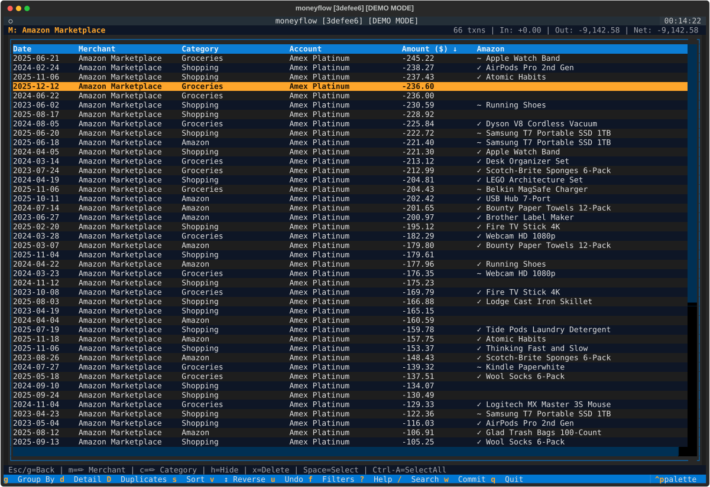

Amazon Purchase Analysis Mode
moneyflow includes a dedicated mode for analyzing Amazon purchase history using Amazon's official "Your Orders" data export. This allows you to import, categorize, and explore your Amazon purchases using the same powerful terminal UI.
Overview
Amazon mode provides:
- Import from official Amazon "Your Orders" data export
- Automatic deduplication and category assignment
- SQLite storage (local, no cloud dependencies)
- Same powerful TUI with keyboard-driven navigation
- Track quantity, pricing, and order status
Getting Started
1. Request Your Amazon Data
IMPORTANT: You need to request your purchase history from Amazon first.
How to Request Your Amazon Data
- Log into your Amazon account
- Go to Account Settings → Privacy → Request My Data
- Select "Your Orders" (you don't need all your data)
- Submit the request
- Wait 1-3 days for Amazon to prepare your data
- Download the Your Orders.zip file when ready
- Unzip it to get the "Your Orders" directory
The directory will contain files like:
Retail.OrderHistory.1/Retail.OrderHistory.1.csvRetail.OrderHistory.2/Retail.OrderHistory.2.csv- etc.
2. Import Your Purchase Data
The import will:
- Scan for all Retail.OrderHistory CSV files
- Parse and validate order data
- Assign categories automatically using built-in category mappings
- Detect and skip duplicates
- Skip cancelled orders
- Store everything in SQLite
3. Check Import Status
This shows:
- Total transactions imported
- Date range of purchases
- Total amount spent
- Number of unique items and categories
- Import history
4. Launch the UI
You can access Amazon mode in two ways:
Option 1: Account Selector (Recommended)
After importing, Amazon will appear in the account selector alongside your other accounts (Monarch Money, YNAB, etc.). Select it with arrow keys or click.
Option 2: Direct CLI Command
Both methods use the same keyboard-driven interface and features.
CSV Format
moneyflow imports from the official Amazon "Your Orders" data export format.
Expected Files
Files named: Retail.OrderHistory.*.csv
Expected Columns
- ASIN: Amazon Standard Identification Number (ASIN) or product name hash if ASIN missing
- Order ID: Amazon order identifier
- Order Date: ISO timestamp (e.g., "2025-10-13T22:08:07Z")
- Product Name: Item description/title
- Quantity: Number of items ordered
- Total Owed: Final amount paid (after tax)
- Unit Price: Item price before tax
- Order Status: "Closed", "New", "Cancelled", etc.
- Shipment Status: "Shipped", "Delivered", etc.
Category Assignment
Categories are automatically assigned using moneyflow's built-in category mappings. You can edit categories in the UI after import.
Features
Automatic Deduplication
Transactions are deduplicated based on a unique ID generated from:
- ASIN (or product name hash if ASIN missing)
- Order ID
This means you can safely re-import the same directory multiple times - duplicates will be automatically skipped.
# First import
moneyflow amazon import ~/Downloads/"Your Orders"
# Output: Imported 100 new transactions
# Re-import (safe!)
moneyflow amazon import ~/Downloads/"Your Orders"
# Output: Skipped 100 duplicates, Imported 0 new transactions
Cancelled orders are automatically skipped during import.
Transaction Linking with Monarch/YNAB
When you use Amazon mode alongside Monarch Money or YNAB, moneyflow can automatically link Amazon orders to transactions in your bank accounts.
Amazon Column in Transaction View
When viewing transactions where ALL merchants are Amazon-like (e.g., after searching for "Amazon" or drilling into Amazon), an Amazon column appears showing matched products:

The column shows:
- ✓ Product Name - Exact match found (amount matches within $0.02)
- ~ Product Name - Likely match found (fuzzy matching for gift card scenarios)
- ... - Still loading (matches are loaded lazily as you scroll)
- (blank) - No matching order found
Three-Pass Matching
moneyflow uses intelligent matching to find the right Amazon order:
- Exact Order Matching - Transaction amount matches order total (within $0.02)
- Fuzzy Matching - For gift card scenarios where transaction < order total (within max($15, 10% of order))
- Item-Level Matching - When Amazon charges items separately, matches individual item amounts
This handles common scenarios like:
- Using a gift card for part of a purchase (shows as
~) - Split charges where Amazon bills items separately
- Multiple items in a single order
Transaction Details View
Press I on any Amazon transaction to see full order details:
Matching Amazon Orders
───────────────────────────────────────
Order: 113-1234567-8901234*
Date: 2025-01-10 | From: amazon
USB-C Cable (x2): -$12.99
Wireless Mouse: -$24.99
Total: -$37.98
───────────────────────────────────────
The * indicates a high-confidence match (exact amount and close date).
Searching by Product Name
The text search (/) also searches Amazon product names! Search for "kindle" to find all transactions where you purchased Kindle-related items, even if the merchant shows as "AMZN MKTP US".
Requirements:
- Import your Amazon purchase history first (
moneyflow amazon import) - Transaction must have "amazon" or "amzn" in the merchant name
- Amount and date must be within tolerance (7 days)
This feature helps you identify exactly what items were in each Amazon charge, making categorization easier.
Incremental Imports
Amazon mode supports incremental imports, preserving any manual edits you've made:
- Import initial data export
- Edit categories and item names in the UI
- Request and import a fresh data export from Amazon (with new purchases)
- Only new orders are added - your edits are preserved
- Use
--forceflag to re-import and overwrite existing transactions if needed
Database Location
Default Location:
Amazon data is stored in your profile directory:
This integrates Amazon with your other accounts and allows selection from the account picker.
Custom Database Location:
You can use a custom location with the --db-path flag:
# Use custom database
moneyflow amazon --db-path ~/Documents/amazon-purchases.db
# All commands support --db-path
moneyflow amazon --db-path ~/custom.db import ~/Downloads/"Your Orders"
moneyflow amazon --db-path ~/custom.db status
UI Navigation
Amazon mode uses the same keyboard shortcuts as the main application. See Keyboard Shortcuts for the complete reference.
View name mappings:
In Amazon mode, views reflect Amazon purchase data:
- Item (instead of Merchant) - Product names
- Category - Product categories
- Group - Category groups
- Order ID (instead of Account) - Group by Amazon order
All navigation, editing, and search shortcuts work identically.
Troubleshooting
Import fails with "No Retail.OrderHistory CSV files found"
Cause: The directory doesn't contain Amazon export files.
Solution:
- Make sure you've unzipped the "Your Orders.zip" file
- Point to the unzipped directory (not individual CSV files)
- The directory should contain folders like
Retail.OrderHistory.1/
"Amazon database is empty" when launching
Cause: No data has been imported yet.
Solution: Import your data first:
Import shows "0 new transactions"
Cause: All transactions already exist in the database.
Solution:
- This is expected if you're re-importing the same data
- Use
--forceflag to re-import:moneyflow amazon import --force ~/Downloads/"Your Orders" - Or delete the database and start fresh:
rm ~/.moneyflow/profiles/amazon/amazon.db
Missing ASIN for some items
Cause: Some Amazon items don't have ASINs (e.g., digital content, gift cards).
Solution: moneyflow automatically generates a pseudo-ASIN from the product name hash. This is normal and doesn't affect functionality.
Tips
- Check status often: Use
moneyflow amazon statusto verify imports - Safe to experiment: Edits are local only, delete the database to reset
- Use custom paths: Keep different analyses separate with
--db-path - Re-import periodically: Request fresh exports from Amazon to get new orders
- Filter by status: Use order status and shipment status to find specific orders
Questions?
See the main documentation or open an issue.